Docker設定¶
WEB UI込みDockerのインストール¶
本製品出荷時では、Docker及びDocker用WEB UIはインストールされておりません。そのため、WEB UIの「メンテナンス」→「機能拡張」タブからDocker及びDocker用WEB UIのインストールを行います。
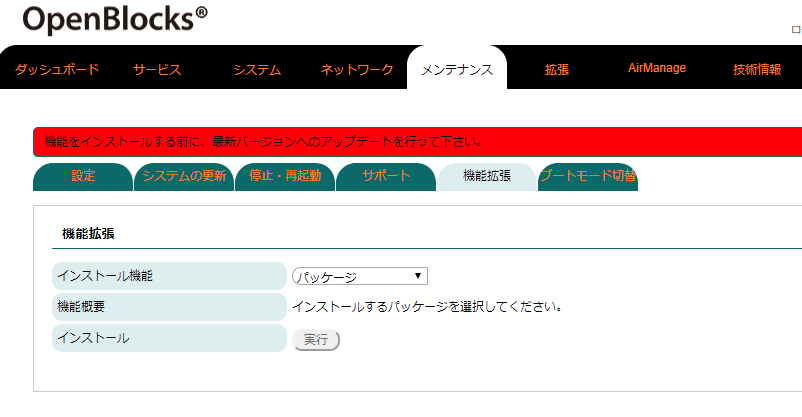
WEB UIの「メンテナンス」タブを選び、さらに「機能拡張」タブをクリックすると機能拡張用のパッケージを選択することができます。
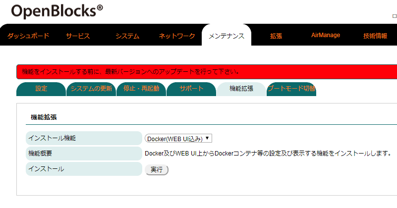
インストール機能のリストから「Docker(WEB UI込み)」を選択します。
その後、インストールの「実行」ボタンを押し、インストールを行ってください。
尚、インストール完了後には反映を行うため、本体再起動が必要となります。そのため、「メンテナンス」→「停止・再起動」から本製品の再起動を行ってください。
Dockerをインストール際に、一部のドライバのコンパイルを行っております。これにより、インストールに時間がかかりますので、「状況確認」ボタン等にて進行状況をご確認ください。
WEB UIからのDocker使用について¶
Docker(WEB UI込み)パッケージがインストールされていると、WEB UIの「サービス」→「基本」タブに「Docker」が表示されます。
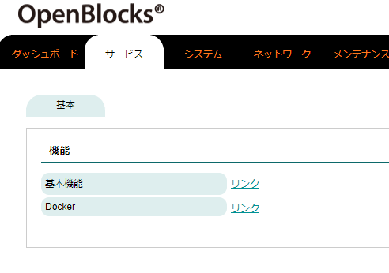
「サービス」→「基本」タブより「Docker」リンクをクリックすると、ルートタブがサービス用の「ダッシュボード」／「基本」／「Docker」に切り替わります。
※「サービス」→「基本」タブに表示されるリンク及びサービス用のルートタブは、「メンテナンス」→「機能拡張」タブよりインストールされたパッケージにより異なります。
Dockerコンテナ一覧¶
一度でも起動したことのあるコンテナの状況の確認、起動・停止等の制御を「Docker」→「コンテナ一覧」タブにて行えます。
■コンテナ稼働中の場合 |
|---|
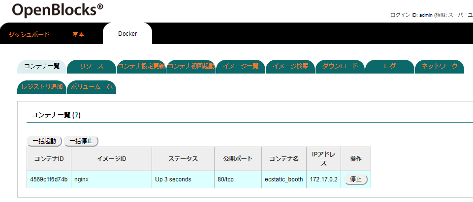 |
コンテナが稼働中の場合、停止することができます。
停止したいコンテナの「停止」ボタンを押すことにより、停止することが可能です。
尚、稼働中のコンテナは公開ポート及びIPアドレスが表示されます。
■コンテナ停止中の場合 |
|---|
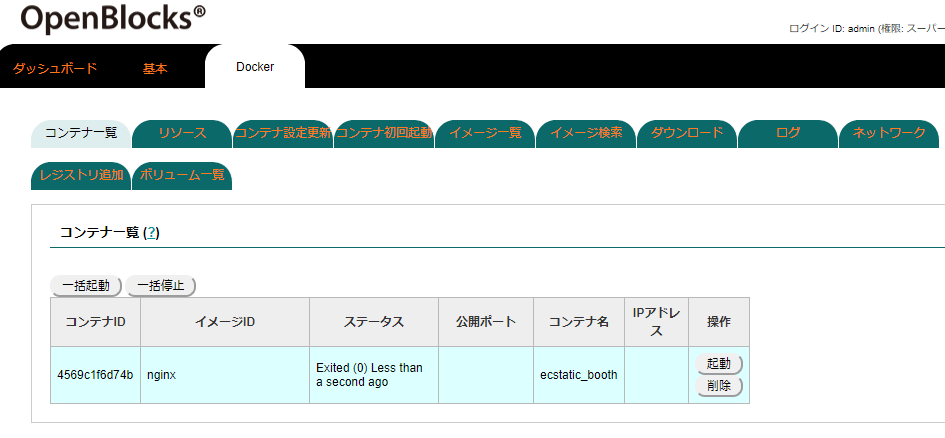 |
コンテナ停止中の場合、起動及び削除が行えます。
起動させる場合には、起動したいコンテナの「起動」ボタンを押すことで起動します。
対象コンテナを削除する場合には、「削除」ボタンを押してください。
Dockerコンテナリソース表示¶
一度でも起動したことのあるコンテナのリソース状況確認を「Docker」→「リソース」タブにて行えます。停止中のコンテナは一覧に表示されますが、停止しているため各リソースは未使用状態となります。
また、本項にてリソースを確認し、各コンテナのリソースチューニングを行って下さい。
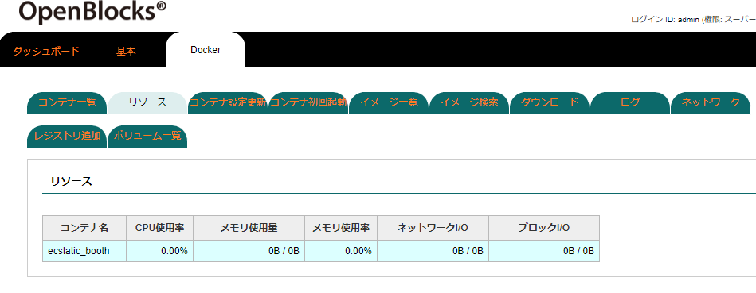
Dockerコンテナリソース設定更新¶
コンテナのリソース設定を「Docker」→「コンテナ設定更新」タブにて行えます。
本項では、ホストや他コンテナに影響がでるようなコンテナを使用する場合に、リソースを制限させることを前提としております。
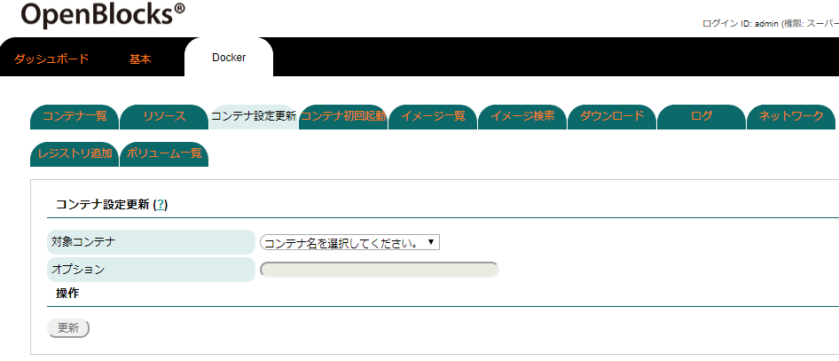
リソース設定を更新するコンテナをプルダウンメニューから選択します。
対象コンテナ選択後、オプションフォーム及び「更新」ボタンを選択できるようになります。
リソース変更用のオプションを入力し、「更新」ボタンを押すことにより適用されます。
本機能では、内部的にdocker updateコマンドを使用しております。
そのため、オプションフォームにはdocker updateコマンドのリソース制御系のオプション部のみを記載してください。
■最大メモリを50Mbyteに制限する場合のサンプル |
|
|---|---|
doceker updateコマンド時の例 |
#docker update --memory 50M --memory-swap 100M nginx_container |
オプションフォームに入力する場合の例 |
--memory 50M --memory-swap 100M |
また、docker updateコマンドの詳細については以下のページをご確認ください。
Dockerコンテナ初回起動¶
コンテナの作成・起動を「Docker」→「コンテナ初回起動」タブにて行えます。
ローカル環境に対象イメージが存在しない場合、自動的にDocker Hubから取得を行います。
※プライベートレジストリサーバのイメージを使用する場合には、「ダウンロード」タブにて事前にイメージを取得してください。
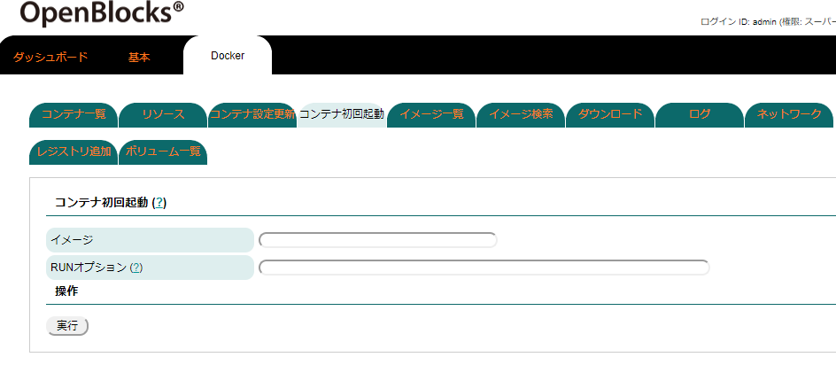
■イメージ
作成及び起動するコンテナのイメージ名を指定します。
■RUNオプション
docker runコマンドのオプションを指定します。尚、強制的にデタッチオプション(-d)が内部的に付与されます。
Docker自体はインストール/再起動後、常時起動しております。WEB UIではDocker本体の再起動等を一部の保存イベントアクションにて行うことがあります。
そのため、使用するコンテナはデタッチ("docker run -d")及び常時再起動ポリシー("docker run --restart=always")オプションを適用し運用してください。
コンテナの管理上、コンテナ名のオプション指定(--name <コンテナ名>)についても使用を推奨いたします。
また、docker runコマンドの詳細については以下のページをご確認ください。
Dockerローカルイメージ確認¶
ローカルに存在するDockerコンテナイメージの一覧の確認を「Docker」→「イメージ一覧」タブにて行えます。
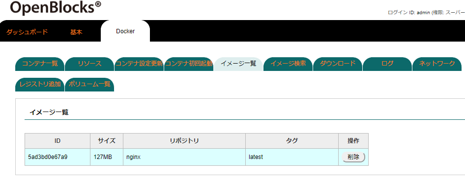
コンテナのもととなるイメージの一覧が表示されます。
使用中/未使用ともに「削除」ボタンが表示されますが、使用中のイメージは削除が行えません。そのため、削除を行う場合には、「コンテナ一覧」にて事前に対象イメージを使用しているコンテナを削除してください。
Dockerイメージの検索¶
Docker Hubに公開されているコンテナイメージを「Docker」→「イメージ検索」タブにて行えます。
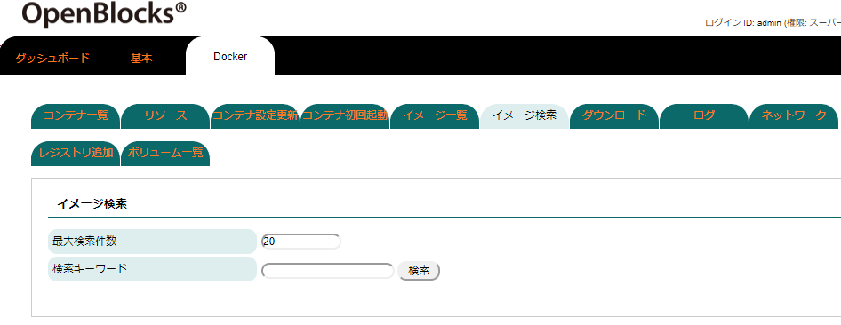
検索キーワードフォームに検索対象文字列を入力後、検索ボタンをおすことにより検索されます。
尚、最大検索件数は100件までとなっております。
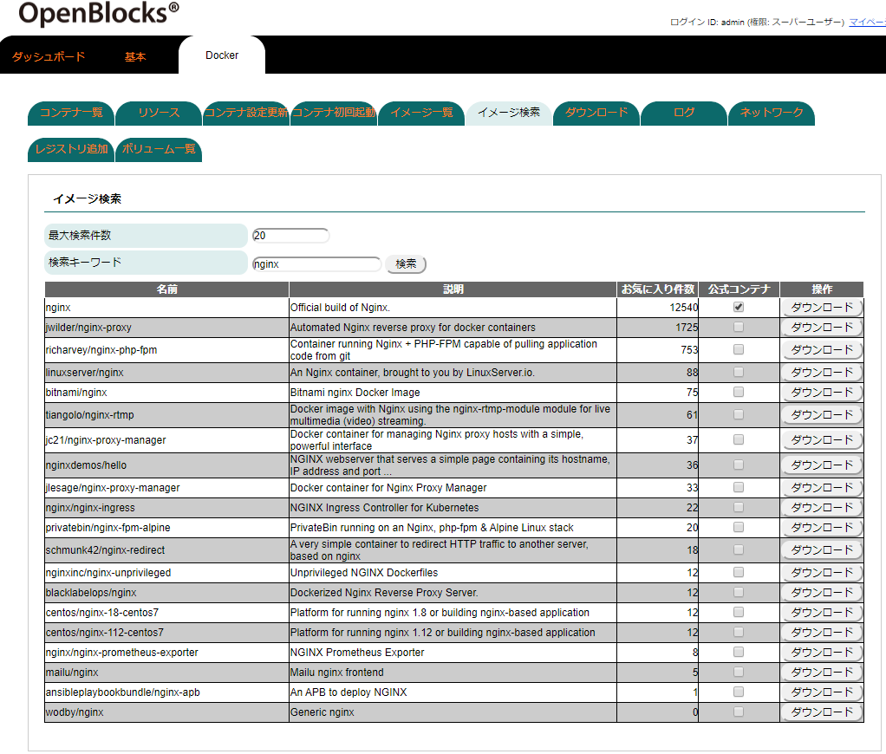
上図は"nginx"のイメージを検索した例となります。
ダウンロードボタンを押すことにより、対象のイメージをダウンロードすることが行えます。
尚、対象イメージをダウンロード中には進捗状況を確認できるよう「検索」ボタンの隣に「状況表示」ボタンが表示されます。こちらのボタンを押して進捗状況の確認を行ってください。
Dockerイメージのダウンロード¶
Docker Hubに公開されているコンテナイメージやプライベートレジストリサーバに存在するコンテナイメージのダウンロードを「Docker」→「ダウンロード」タブにて行えます。
ダウンロードするコンテナイメージがプライベートレジストリサーバの場合、事前に対象サーバーへのログイン情報が必要となります。こちらについては「レジストリ追加」タブにてログイン情報を設定してください。
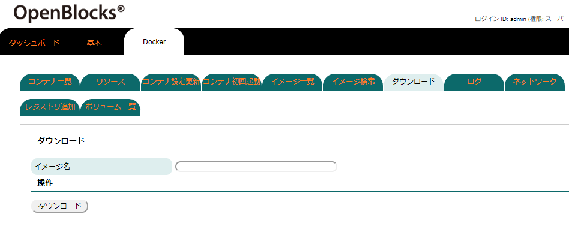
ダウンロードしたいイメージ名を指定します。
特定のタグのイメージを取得する場合には、イメージ名[:タグ名]を指定してください。
イメージ名入力後、ダウンロードボタンを押すことにより対象のイメージがダウンロードされます。
ダウンロードボタンを押した場合、「状況確認」ボタンが表示されます。このボタンで進行状況が確認できますので、ダウンロードするイメージサイズが大きい場合等にご利用ください。
Dockerコンテナのログ確認¶
使用しているコンテナが出力しているログの確認を「Docker」→「ログ」タブにて行えます。
尚、コンテナを削除した場合には対象コンテナのログについても削除される為、本項での確認も行えなくなります。
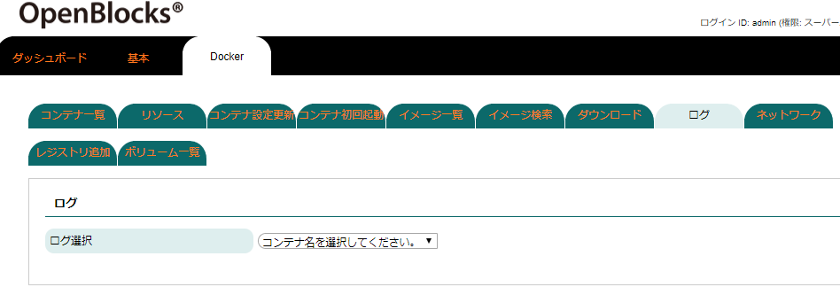 |
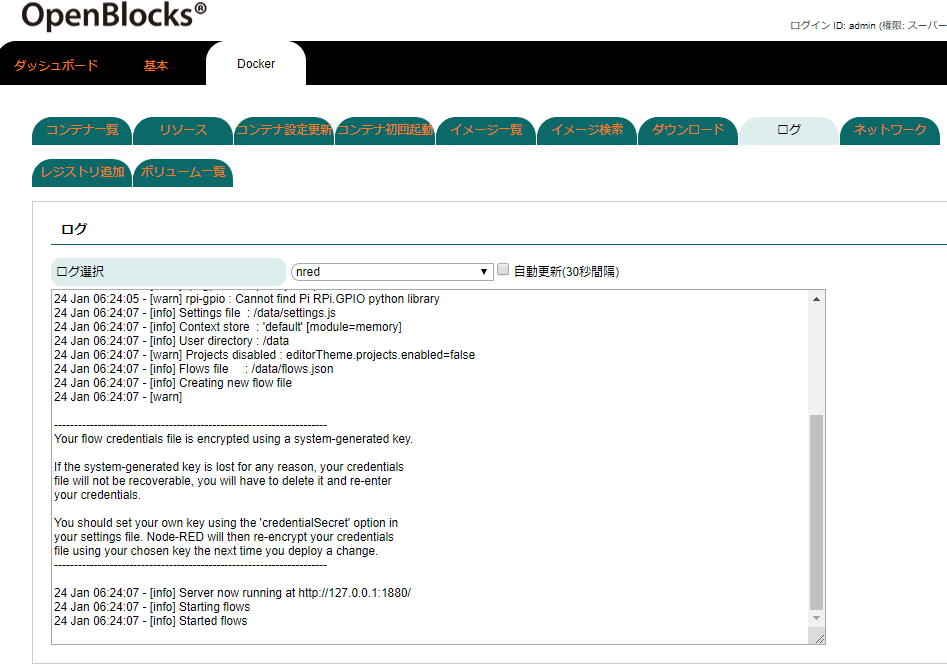 |
ログを確認したいコンテナをプルダウンメニューから選択します。
コンテナを選択した場合、ログ表示領域が表示されます。
また、対象コンテナの最終ログから一定量表示されます。
Dockerコンテナのネットワーク設定¶
作成したコンテナをデフォルトのネットワーク以外を用いたい場合、ネットワーク自体の作成及びコンテナとの接続・切断の設定を「Docker」→「ネットワーク」タブにて行えます。
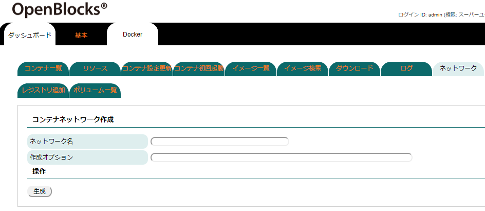
タブを選択すると上図のように表示されます。
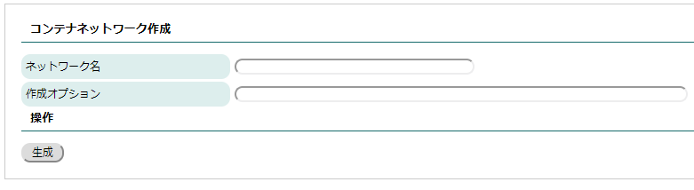
■コンテナネットワーク作成 (docker network createコマンド)
作成したいネットワーク名及び作成オプションを指定し、「生成」ボタンを押すことでネットワークが生成されます。
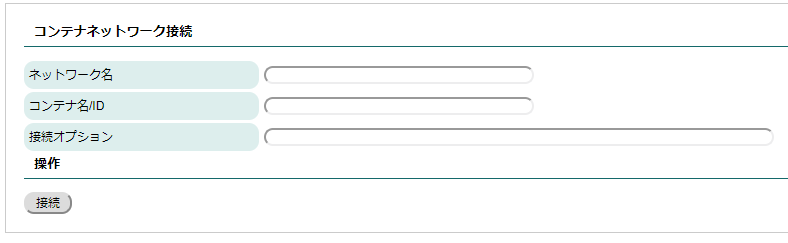
■コンテナネットワーク接続 (docker network connectコマンド)
接続したいネットワーク名及び対象コンテナ、接続オプションを指定し、「接続」ボタンを押すことでネットワークが接続されます。
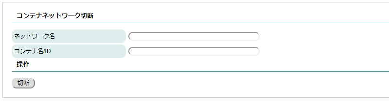
■コンテナネットワーク切断 (docker network disconnectコマンド)
切断したいネットワーク名及び対象コンテナを指定し、「切断」ボタンを押すことでネットワークが切断されます。
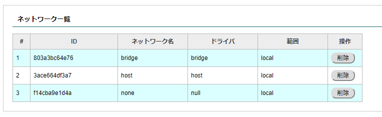
■ネットワーク一覧
Dockerのネットワークとして存在しているネットワークの一覧を表示します。作成したネットワークを削除したい場合には、「削除」ボタンを押すことにより削除可能です。
尚、一部のネットワークはDockerの制約上削除することができません。
また、docker netowork関連のコマンドの詳細は以下のページをご確認ください。
■docker network createコマンド
http://docs.docker.jp/engine/reference/commandline/network_create.html
■docker network connectコマンド
http://docs.docker.jp/engine/reference/commandline/network_connect.html
■docker network disconnectコマンド
http://docs.docker.jp/engine/reference/commandline/network_disconnect.html
プライベートレジストリサーバーの認証設定¶
第3者へ公開したくないコンテナ等を使用する場合、プライベートレジストリサーバーを用いる場合があります。このプライベートレジストリサーバーを用いる場合、認証情報必要となります。認証情報の設定を「Docker」→「レジストリ追加」タブにて行えます。

ログインしたいプライベートレジストリサーバーに関する情報を設定します。
項目 |
説明 |
|---|---|
ログインサーバー |
ログインするプライベートレジストリサーバーのFQDNまたはIPアドレスを指定します。 |
ユーザー名 |
ログインする際のユーザー名を指定します。 |
パスワード |
ログイン時のパスワードを指定します。 |
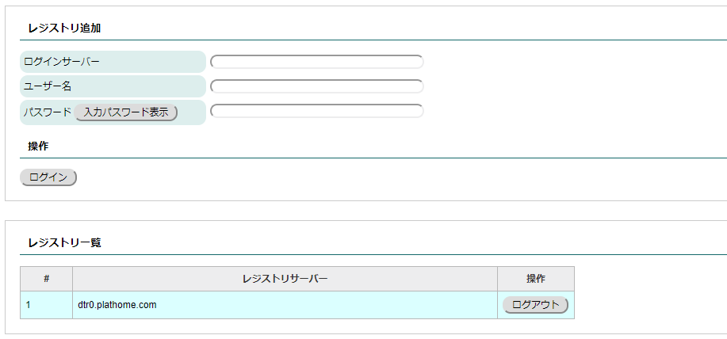
ログインに成功した場合、上図のようにレジストリ一覧に追加されます。
尚、対象レジストリサーバーからログアウトを行う場合には、「ログアウト」ボタンを押して下さい。
ログインボタンを押した段階で実際にログイン処理が適用されます。そのため、プライベートレジストリサーバーへネットワーク接続が行える環境にて実施してください。
ボリューム一覧表示及び削除¶
一部のコンテナは、コンテナ及びイメージの削除を行った場合でもストレージ上に存在し続けることがあります。その場合、意図的にボリュームを削除する必要があります。
Docker管理がディスクボリュームの一覧を「Docker」→「ボリューム一覧」タブにて確認及び削除することができます。
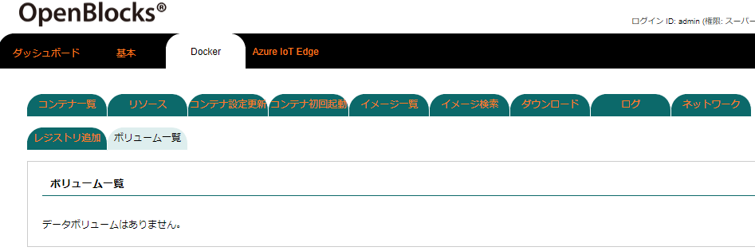
存在している一覧のボリュームを表示します。
「未使用データ削除」ボタンを押すことにより、既に不要となっているボリュームを削除することができます。
※未使用データ削除はDocker DAEMONが不要と判断しているデータを削除します。停止中のコンテナ等についても削除される恐れがありますので、必要なコンテナが稼働中の状態にて実施してください。